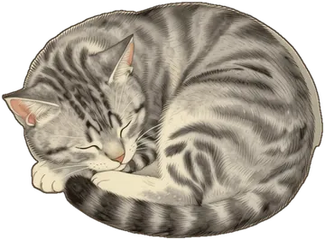
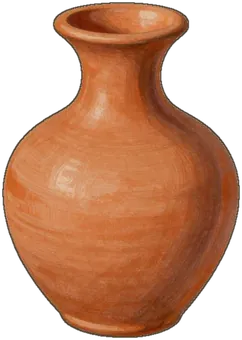

Allah told Adam and Hawa they could enjoy everything in Jannah, but that there was ONE tree they must not go near.
Shaytan whispered to Adam and Hawa and tricked them. They slipped and made a mistake: they ate from the forbidden tree. As soon as they did, they realized what they had done.
And SubhanAllah - Allah forgave them! Allah is the Most Merciful!
Adam and Hawa were sent to live on Earth. Allah told them that Earth would be their home, and from them would come all the people of the world - including you!
Adam's Dua for Forgiveness
رَبَّنَا ظَلَمْنَا أَنفُسَنَا وَإِن لَّمْ تَغْفِرْ لَنَا وَتَرْحَمْنَا لَنَكُونَنَّ مِنَ الْخَاسِرِينَ
"Our Lord, we have wronged ourselves, and if You do not forgive us and have mercy upon us, we will surely be among the losers." (Surah Al-A'raf 7:23)
أستغفر الله
Astaghfirullah: I ask Allah to forgive me
Parent pause
Stop for a moment and ask together:
Allah loves to forgive
Adam's Dua for Forgiveness
رَبَّنَا ظَلَمْنَا أَنفُسَنَا وَإِن لَّمْ تَغْفِرْ لَنَا وَتَرْحَمْنَا لَنَكُونَنَّ مِنَ الْخَاسِرِينَ
"Our Lord, we have wronged ourselves, and if You do not forgive us and have mercy upon us, we will surely be among the losers." (Surah Al-A'raf 7:23)
Say this dua when you make a mistake and want Allah's forgiveness!